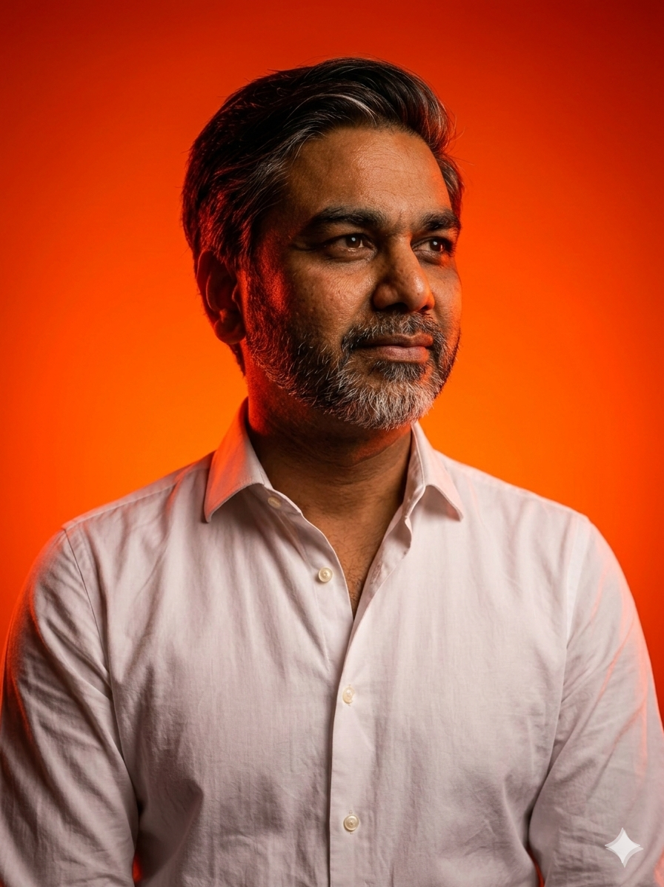

03
Current feature
The Founder Building a Kinder Internet for Children
A conversation with Hugh Shepherd, founder of Liaura, on children, music, safety and the digital world they are walking into.
Open featureMayfair Edition · Issue 03
Editorial is a curated salon of long-form perspective: precise, elegant, and commercially literate. A quieter front door for ideas worth reading twice.
Featured Issue
A reflective founder conversation on music, childhood, safety, and why the first digital environment we give children really matters.
Read the issueThe salon is built for people who still believe that elegant thought, commercial judgment, and editorial taste belong in the same room.
Curated Feature
The point of Editorial is not to flood the page with updates. It is to present select work with calm authority. Each feature is intended to feel collected, circulated, and worth revisiting.
Advisory presence remains in the background. The writing leads. The design frames it. The impression should be closer to a private salon in Mayfair than a standard content website.
Curated List
Current feature
A conversation with Hugh Shepherd, founder of Liaura, on children, music, safety and the digital world they are walking into.
Open featureFrom the collection
A forward-looking editorial on the shifts, pressures, and opportunities shaping travel in 2026.
Open featureFrom the collection
A long-form piece on conviction, conversation, and what becomes visible when you slow down long enough to hear what matters.
Open featureSalon Note
Editorial exists for readers who value precision, judgment, and perspective with weight behind it. The advisory work matters, but it does not need to shout from the doorway.
This homepage should feel composed, expensive, and collected. Less “content platform.” More private briefing room.

Host
Founder, Bhuzen Advisory
The salon is anchored by advisory work shaped through commercial experience, digital judgment, and an instinct for clarity over theatre.
Editorial is where those instincts become published thought: selective, elegant, and meant for serious readers.
LinkedIn